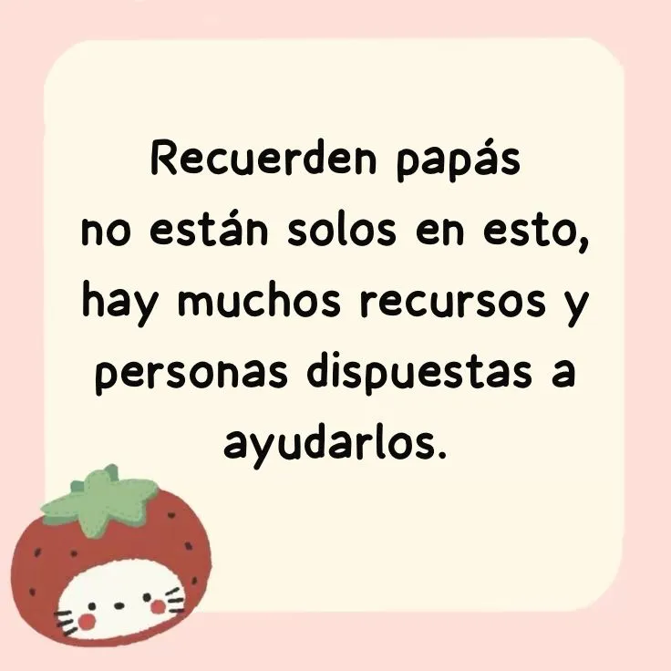

INICIO
Es un padecimiento que el adolescente realiza cuando se siente mal o quiere liberar sus emociones de alguna manera, es importante saber que varias veces este padecimiento no se puede ver a simple vista y para ello se necesita prestar más atención al comportamiento del adolescente. De igual manera tener en cuenta que las autolesiones se pueden presentar como rasguños, cortadas, quemaduras o golpes.
No existe causa exacta pero, mayoritariamente se llega a padecer por cambios demasiados fuertes o malos en la vida del adolescente, por sufrir de burlas o comentarios negativos, por haber mucha violencia en su alrededor, por no tener amor propio, por sentirse incomprendidos, abrumados, solos o inútiles.
Intente cada cierto tiempo tener conversaciones con su hijo y preguntarle respecto a sus sentimientos.
Haga saber a su hijo que usted esta ahí para el cuando sus emociones sean difíciles de soportar.
Intente pasar tiempo junto a su hijo haciendo cosas divertidas, entretenidas o relajantes.